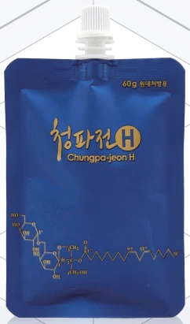
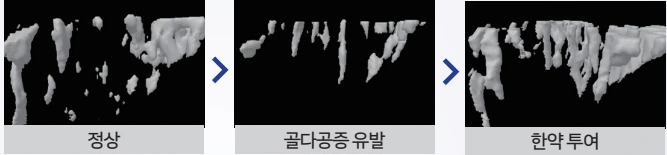
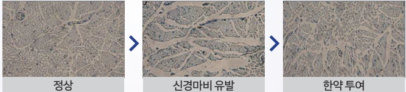
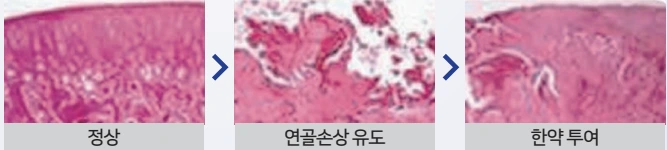

치료의 특징
신바로한약은 염증과 통증의 감소, 뼈·연골의 보호, 손상된 신경의 회복을 지향합니다. 척추 주변의 근육과 인대를 포함한 조직을 함께 살피는 자생 비수술 치료의 한 부분입니다.

연구에서 살펴본 네 가지 작용
다음은 동물 및 세포 실험에서 살펴본 작용입니다.
염증 및 부종
발에 염증을 유발한 쥐에게 신바로한약을 투여해 염증·부종 변화를 관찰했습니다.
뼈
난소 제거로 골다공증을 유발한 쥐에게 투여한 후 골소주 세포 재생을 관찰했습니다.

신경
마비를 유도한 신경세포에 처리한 후 신경돌기 재생을 관찰했습니다.

연골
연골 손상을 유도한 쥐에게 투여해 연골세포의 변화를 관찰했습니다.
